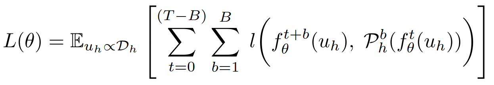
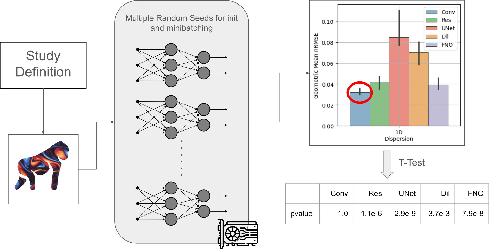
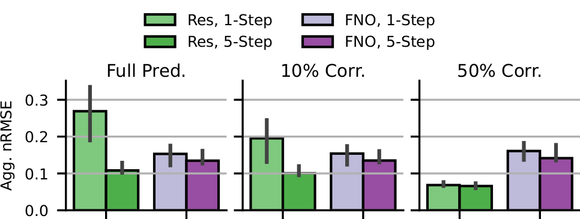
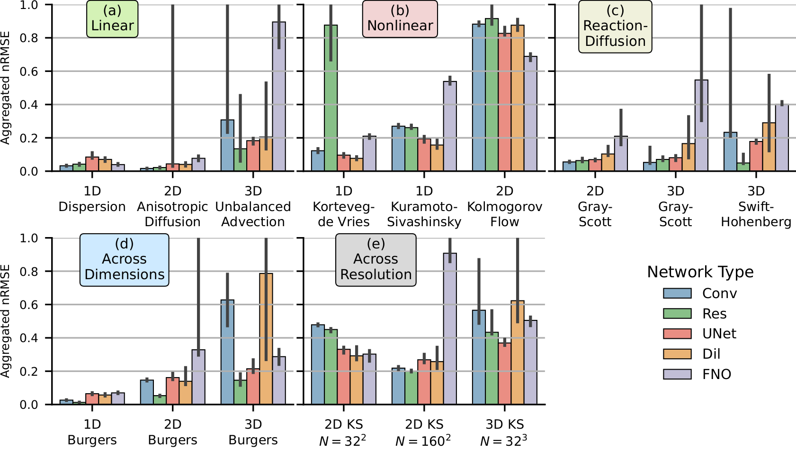
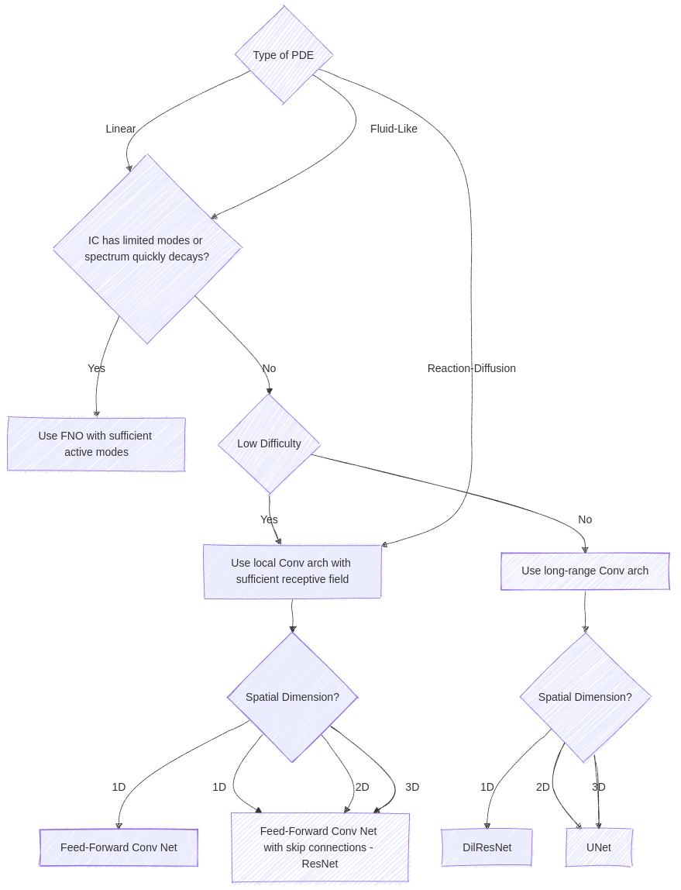

Built-In Support for Unrolled Training
APEBench is built around autoregressive emulation
and hence emphasizes the temporal axis in emulator
learning. This includes the option for unrolled
training (also called
autoregressive/recursive/rollout training). We unify
many approaches in terms of main chain (=unrolled)
length T and branch chain (=reference) length B.

One-Step supervised training is T=B=1, while
five-step unrolled training is T=B=5. Branch-one
diverted chain training is T=5, B=1. The latter requires
a differentiable solver, readily available in APEBench.
A wide range of Dynamics
Accessible via the reduced difficulty or normalized
interfaces or via a physical interface. Most dynamics
are available in 1D, 2D, and 3D.
| Difficulty | Phsical | Normalized |
|---|---|---|
| diff_lin | phy_poisson | norm_lin |
| diff_lin_simple | phy_sh | norm_adv |
| diff_adv | phy_gs | norm_diff |
| diff_diff | phy_gs_type | norm_adv_diff |
| diff_adv_diff | phy_decay_turb | norm_disp |
| diff_disp | phy_kolm_flow | norm_fisher |
| diff_hyp_diff | phy_lin | norm_four |
| diff_four | phy_lin_simple | norm_hypdiff |
| diff_conv | phy_adv | norm_nonlin |
| diff_burgers | phy_diff | norm_conv |
| diff_kdv | phy_adv_diff | norm_burgers |
| diff_ks_cons | phy_disp | norm_kdv |
| diff_ks | phy_hyp_diff | norm_ks_cons |
| diff_nonlin | phy_four | norm_ks |
| diff_burgers_sc | phy_nonlin | norm_burgers_sc |
| diff_fisher | phy_burgers_sc | norm_lin_simple |
| phy_kdv | ||
| phy_ks | ||
| phy_conv | ||
| phy_burgers | ||
| phy_ks_cons | ||
| phy_poly | ||
| phy_fisher | ||
| phy_unbal_adv | ||
| phy_diag_diff | ||
| phy_aniso_diff | ||
| phy_mix_disp | ||
| phy_mix_hyp |
Procedural data generation
APEBench's embedded pseudo-spectral solver is very
efficient. All training and test data is
procedurally (deterministically) generated
on-the-fly. There is no need to download large
datasets, and the simulator can be embedded into the
training loop for all kinds of differentiable
physics like "solver-in-the-loop" correction setups.
Simplified Study Workflow
An APEBench study is a list of dictionaries which
APEBench executes and conviently returns Pandas
dataframes that can be used for statistical
postprocessing (e.g., over random seeds) via Seaborn.
Seed Statistics are a first-class Citizen
APEBench inherently supports re-running experiments
with different random seeds (for network
initialization, stochastic minibatching and
optionally also for the procedural data generation).
Seed statistics allow for clearly determining a
superior emulator architecture or learning
methodology based on hypothesis testing. For 1D
scenarios, APEBench can parallelize multiple seeds
on one GPU to obtain seed statistics virtually for
free.

Integrated Volume Renderer
APEBench is accompanied by an efficient
(Rust/WebGPU-based) volume renderer to quickly
visualize 2D and 3D trajectories. Try it
yourself based on a five-axis NumPy array (time
x channel x space_0 x space_1 x space_2) or with
precomputed Gray-Scott data (Caution! This
downloads ~100MB for the opened tab).
The Relation between Neural Emulators and Numerical Simulators
The fine-grained control over the emulation
scenarios allows for drawing analogies between
neural emulation and classical numerical simulation.
For example, (a) the performance of
convolution-based architectures is bound by their
receptive field and the difficulty (γ₁ = CFL) of the
advection scenario. On the other hand, (a) the
pseudo-spectral FNO architecture is agnostic to
changes in γ₁. (b) For the highest difficulty,
unrolling improves the accuracy of the ResNet.

Benchmark Neural-Hybrid Emulators with Differentiable Physics
With the embedded differentiable solver, APEBench
can investigate neural-hybrid correction setups. For
example, if both ResNet and FNO are used either as
full prediction emulators or neural-hybrid emulators
for 2D advection (γ₁=10.5) with a coarse solver
doing 10% or 50% of the difficulty. Training with
unrolling benefits the limited receptive field
ResNet yet only shows marginal improvement for the
FNO. The ResNet can work in symbiosis with a coarse
simulator.

A wide range of architectures and PDE dynamics
The wide range of PDE dynamics in 1D, 2D, and 3D
allows for drawing further analogies. In the paper,
we investigated a subset of the 46 PDE dynamics.

APEBench's experiments suggest neural architectures
Ultimately, with the studies conducted for the
APEBench paper, we can suggest emulator
architectures with the following decision tree.

BibTeX
@article{koehler2024apebench,
title={{APEBench}: A Benchmark for Autoregressive Neural Emulators of {PDE}s},
author={Felix Koehler and Simon Niedermayr and R{\"}udiger Westermann and Nils Thuerey},
journal={Advances in Neural Information Processing Systems (NeurIPS)},
volume={38},
year={2024}
}